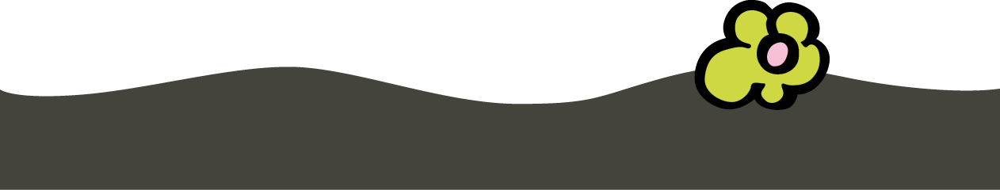

Une question, une date ?
Rue de Beusdael 81, 4851 Sippenaeken · Itinéraire
Au cœur du Pays de Herve, à deux pas des Pays-Bas et de l'Allemagne : balades, patrimoine et sorties pour petits et grands.
Notre gîte est meublé avec les produits de Marcelis Luc, antiquités, brocante et meubles sur mesure : www.marcelisluc.be
Rue de Beusdael 81, 4851 Sippenaeken · Itinéraire
